Ryd global enviorment og hent filen (en god ide, er at sætte dit work directory inden, f.eks. til dit skrivebord eller et andet sted, du ved hvor er. "Session - Set Working Directory - Choose Directory)
rm(list = ls())
df <- read.csv("animals.csv", sep = ";")Fjern irrelevante kolonner:
df$Participant.ID <- NULL
df$Køn <- NULL
df$Timers.søvn <- NULL
df$Prøvet.før. <- NULL
df$Andre.noter <- NULLLoad tidyverse
library(tidyverse)Omdøb kolonnerne
colnames(df)[1] <- "Reading no int."
colnames(df)[2] <- "Naming no int."
colnames(df)[3] <- "Reading w. int."
colnames(df)[4] <- "Naming w. int."Brug gather for at samle dataene til en samlet liste, for at kunne lave boxplot
df_long <- gather(df, key = "Condition", value = "Time")
#Se listen
head(df_long)## Condition Time
## 1 Reading no int. 5.43
## 2 Reading no int. 4.38
## 3 Reading no int. 5.11
## 4 Reading no int. 5.83
## 5 Reading no int. 4.86
## 6 Reading no int. 7.31Bar plot af den sammenlagte tid lagt oven i hinanden
ggplot(df_long, aes(x = Condition, y = Time)) +
geom_bar(stat = "identity") +
coord_flip()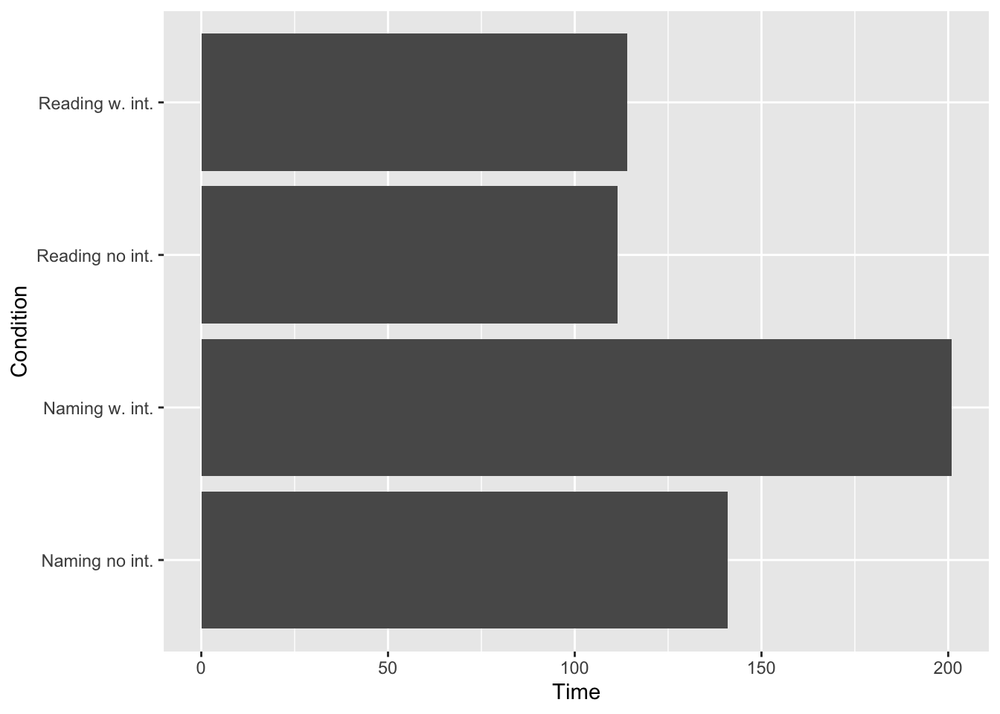
En række boxplots og points
ggplot(df_long, aes(x = Condition, y = Time, color = Condition)) +
geom_point() +
labs(title = "Points")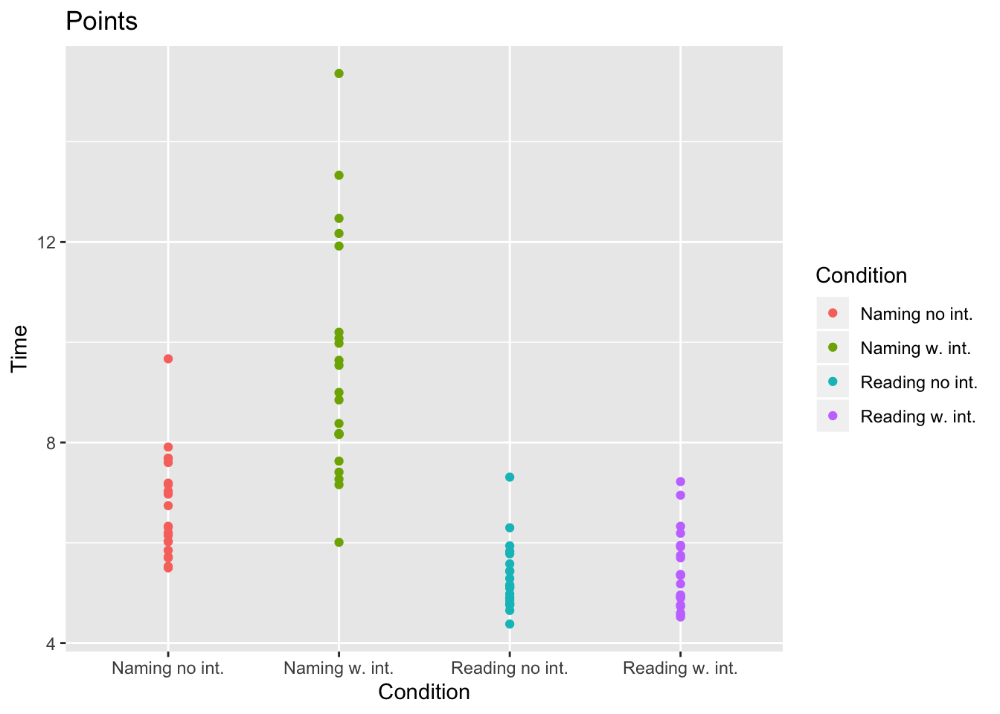
ggplot(df_long, aes(x = Condition, y = Time, color = Condition)) +
geom_boxplot() +
labs(title = "Boxplot")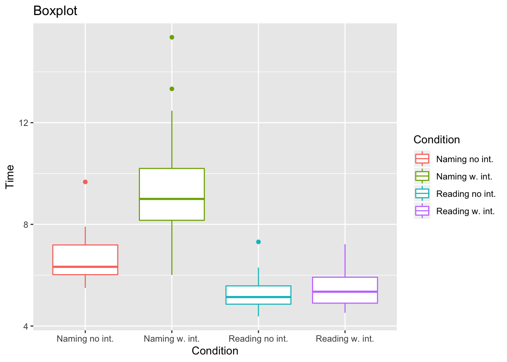
ggplot(df_long, aes(x = Condition, y = Time, color = Condition)) +
geom_boxplot() +
geom_point() +
labs(title = "Boxplot with points")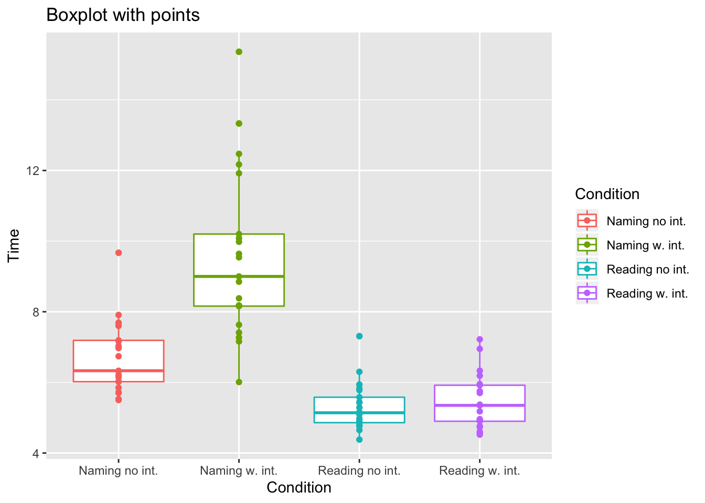
ggplot(df_long, aes(x = Condition, y = Time, color = Condition)) +
geom_boxplot() +
geom_jitter() +
labs(title = "Boxplot with jitter")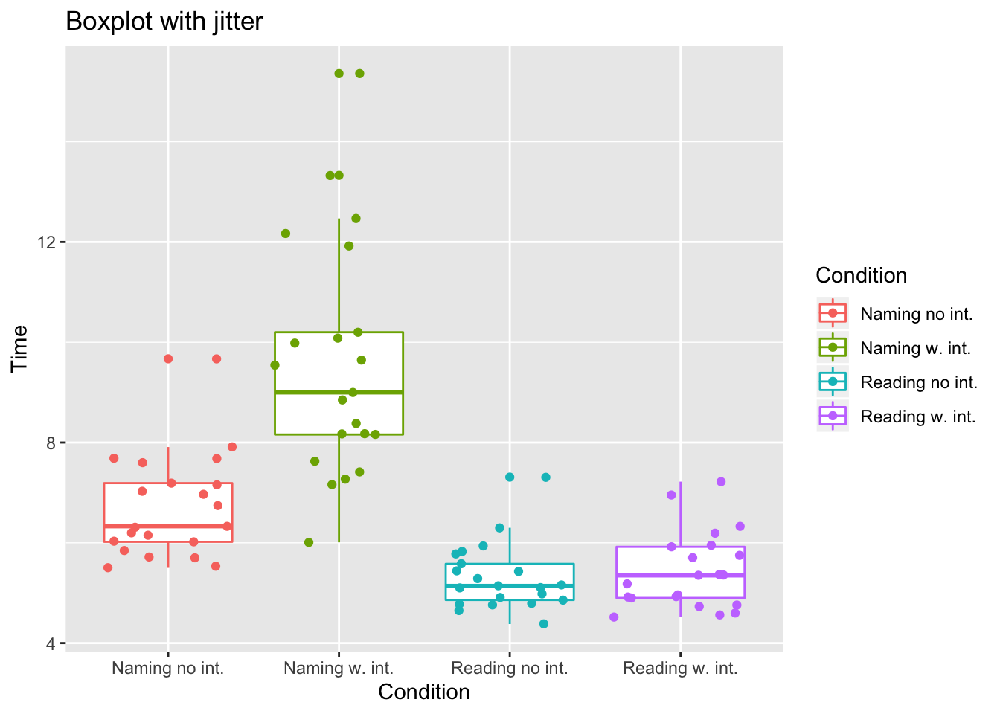
ggplot(df_long, aes(x = Condition, y = Time, color = Condition)) +
geom_boxplot() +
geom_violin() +
labs(title = "Violin")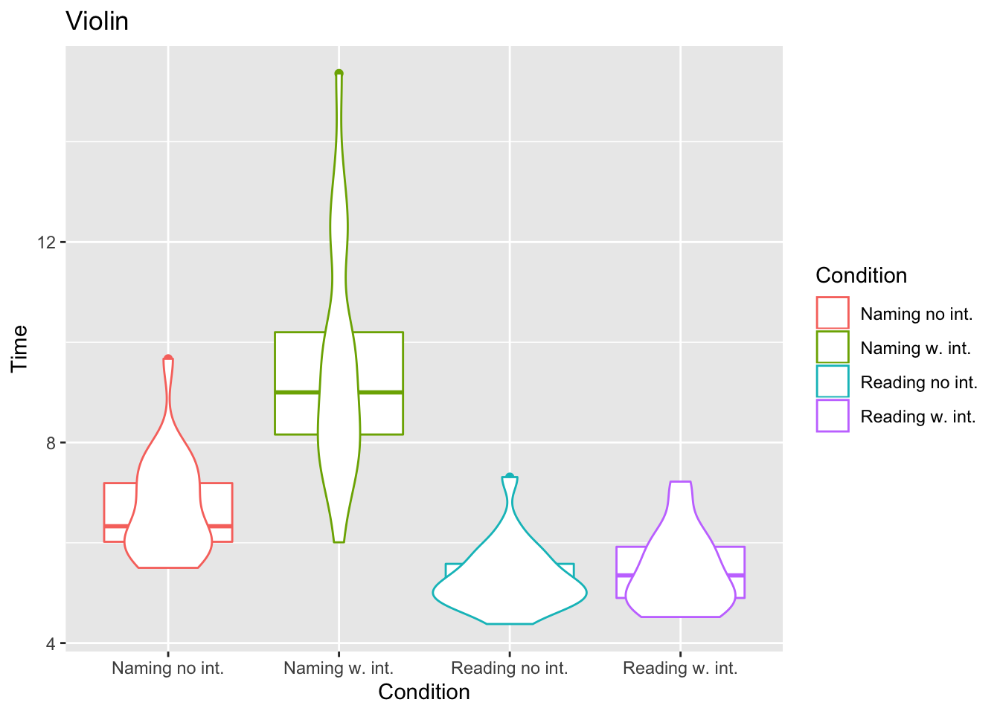
ggplot(df_long, aes(x = Condition, y = Time, color = Condition)) +
geom_boxplot() +
geom_violin() +
coord_flip() +
labs(title = "Flipped violin")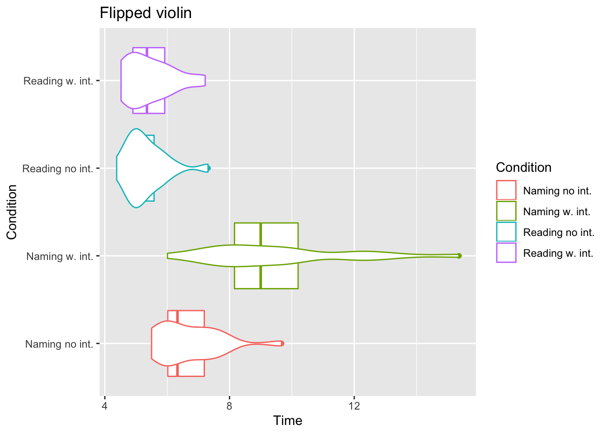
Slet global enviorment og hent filen igen
rm(list = ls())
df <- read.csv("animals.csv", sep = ";")Se fordelingen
table(df$Køn)##
## Kvinde Mand
## 17 4Fjern irrellevante kolonner
df$Participant.ID <- NULL
df$Timers.søvn <- NULL
df$Prøvet.før. <- NULL
df$Andre.noter <- NULLOmdøb igen
colnames(df)[1] <- "Reading no int."
colnames(df)[2] <- "Naming no int."
colnames(df)[3] <- "Reading with int."
colnames(df)[4] <- "Naming with int."Lav en variabel med ifelse
df$Køn <- ifelse(df$Køn == "Mand", 1, 0)Sorter kvinder fra mænd
Mænd <- subset(df, df$Køn == 1)
Kvinder <- subset(df, df$Køn == 0)Fjern irrellevante kolonner
Kvinder$Køn <- NULL
Mænd$Køn <- NULLBrug igen gather for mænd og kvinder
Mænd_long <- gather(Mænd, key = "Condition", value = "Time")
Kvinder_long <- gather(Kvinder, key = "Condition", value = "Time")Sammenhold
library(patchwork)
mp <- ggplot(Mænd_long, aes(x = Condition, y = Time, color = Condition)) +
geom_point() +
ylim(3,16) +
theme(legend.position = "none") +
labs(title = "Mænd")
kp <- ggplot(Kvinder_long, aes(x = Condition, y = Time, color = Condition)) +
geom_point() +
ylim(3, 16) +
labs(title = "Kvinder")
mp + theme(axis.text.x = element_text(angle = 90, hjust = 1)) + kp + theme(axis.text.x = element_text(angle = 90, hjust = 1))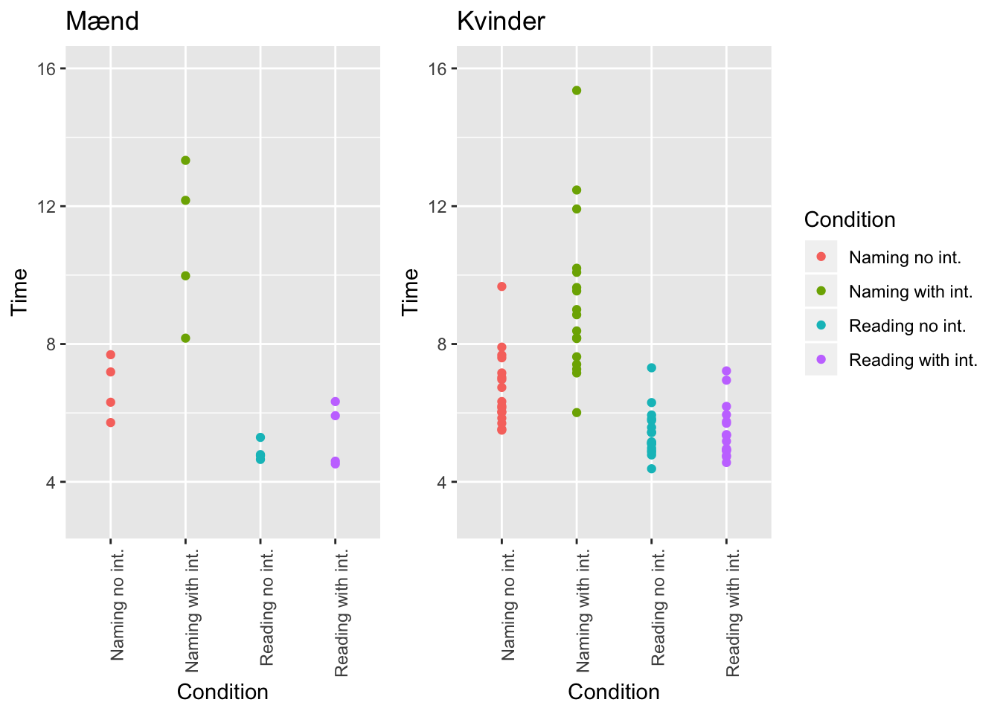
mb <- ggplot(Mænd_long, aes(x = Condition, y = Time, color = Condition)) +
geom_boxplot() +
ylim(3, 16) +
theme(legend.position = "none") +
labs(title = "Mænd")
kb <- ggplot(Kvinder_long, aes(x = Condition, y = Time, color = Condition)) +
geom_boxplot() +
ylim(3, 16) +
labs(title = "Kvinder")
mb + theme(axis.text.x = element_text(angle = 90, hjust = 1)) + kb + theme(axis.text.x = element_text(angle = 90, hjust = 1))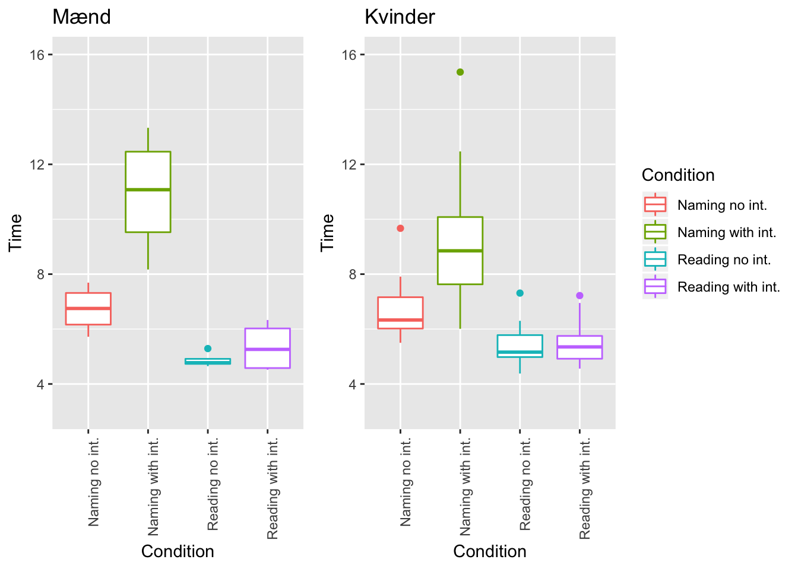
Slet global enviorment og hent filen igen
rm(list = ls())
df <- read.csv("animals.csv", sep = ";")Fjern irrelevante kolonner
df$Participant.ID <- NULL
df$Køn <- NULL
df$Prøvet.før. <- NULL
df$Andre.noter <- NULLOmdøb kolonnerne
colnames(df)[1] <- "Reading no int."
colnames(df)[2] <- "Naming no int."
colnames(df)[3] <- "Reading w. int."
colnames(df)[4] <- "Naming w. int."Kør plottet
p <- ggplot(df, aes(df$`Naming w. int.`, df$Timers.søvn)) +
geom_point() +
theme_classic() +
geom_smooth(method = "lm", se = FALSE, col = "red") +
ylab("Timers søvn") +
xlab("Tid") +
labs(title = "Naming with interference vs timer søvn")
p + annotate("text", x = 12, y = 8.5, label = "p-value 0.1093", color = "red")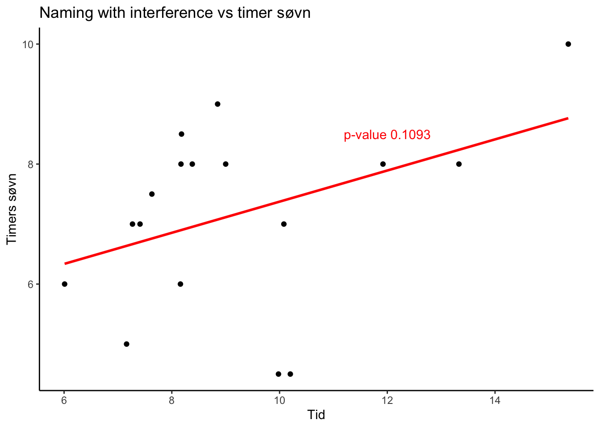
Analyser regressionen:
nvst <- lm(df$`Naming w. int.` ~ df$Timers.søvn)
summary(nvst)##
## Call:
## lm(formula = df$`Naming w. int.` ~ df$Timers.søvn)
##
## Residuals:
## Min 1Q Median 3Q Max
## -2.4965 -1.7205 -0.7544 2.1656 4.3577
##
## Coefficients:
## Estimate Std. Error t value Pr(>|t|)
## (Intercept) 4.7629 2.6876 1.772 0.0967 .
## df$Timers.søvn 0.6239 0.3665 1.702 0.1093
## ---
## Signif. codes: 0 '***' 0.001 '**' 0.01 '*' 0.05 '.' 0.1 ' ' 1
##
## Residual standard error: 2.273 on 15 degrees of freedom
## (4 observations deleted due to missingness)
## Multiple R-squared: 0.1619, Adjusted R-squared: 0.106
## F-statistic: 2.898 on 1 and 15 DF, p-value: 0.1093Slet global enviorment og hent filen igen
rm(list = ls())
df <- read.csv("animals.csv", sep = ";")Fjern irrelevante kolonner
df$Participant.ID <- NULL
df$Køn <- NULL
df$Prøvet.før. <- NULL
df$Andre.noter <- NULLOmdøb kolonnerne
colnames(df)[1] <- "Reading no int."
colnames(df)[2] <- "Naming no int."
colnames(df)[3] <- "Reading w. int."
colnames(df)[4] <- "Naming w. int."Kør plottet
p <- ggplot(df, aes(df$`Naming no int.`, df$Timers.søvn)) +
geom_point() +
theme_classic() +
geom_smooth(method = "lm", se = FALSE, col = "red") +
ylab("Timers søvn") +
xlab("Tid") +
labs(title = "Naming no interference vs timer søvn")
p + annotate("text", x = 9, y = 8, label = "p-value: 0.7522", color = "red")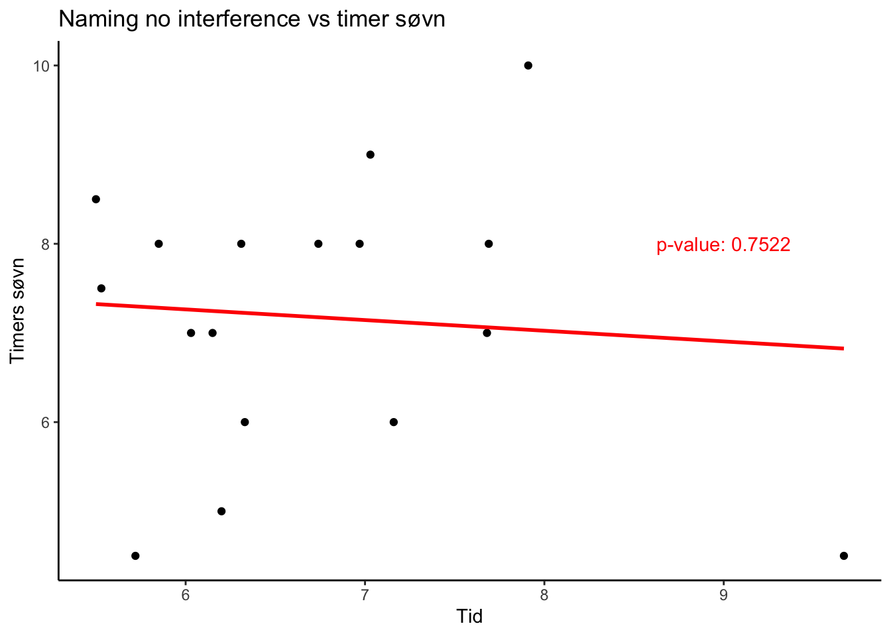
Analyser regressionen
nvst <- lm(df$`Naming no int.` ~ df$Timers.søvn)
summary(nvst)##
## Call:
## lm(formula = df$`Naming no int.` ~ df$Timers.søvn)
##
## Residuals:
## Min 1Q Median 3Q Max
## -1.1850 -0.7136 -0.3764 0.4008 2.7834
##
## Coefficients:
## Estimate Std. Error t value Pr(>|t|)
## (Intercept) 7.1440 1.3042 5.477 6.37e-05 ***
## df$Timers.søvn -0.0572 0.1779 -0.322 0.752
## ---
## Signif. codes: 0 '***' 0.001 '**' 0.01 '*' 0.05 '.' 0.1 ' ' 1
##
## Residual standard error: 1.103 on 15 degrees of freedom
## (4 observations deleted due to missingness)
## Multiple R-squared: 0.006847, Adjusted R-squared: -0.05936
## F-statistic: 0.1034 on 1 and 15 DF, p-value: 0.7522Slet global enviorment og kør filen
rm(list = ls())
df <- read.csv("animals.csv", sep = ";")Check table
table(df$Prøvet.før.)##
## Ja Nej
## 5 6 10Fjern irrelevante kolonner
df$Participant.ID <- NULL
df$Køn <- NULL
df$Timers.søvn <- NULL
df$Andre.noter <- NULLOmdøb kolonnerne
colnames(df)[1] <- "Reading no int."
colnames(df)[2] <- "Naming no int."
colnames(df)[3] <- "Reading w. int."
colnames(df)[4] <- "Naming w. int."Sortér lortet
pf <- subset(df, df$Prøvet.før. == "Ja")
ipf <- subset(df, df$Prøvet.før. == "Nej")Slet irrellevante kolonner
pf$Prøvet.før. <- NULL
ipf$Prøvet.før. <- NULLLav en gather og formatér til numeric
pf_long <- gather(pf, key = "Condition", value = "Time")
pf_long$Time <- as.numeric(pf_long$Time)
ipf_long <- gather(ipf, key = "Condition", value = "Time")
ipf_long$Time <- as.numeric(ipf_long$Time)Plot svinet som points
p <- ggplot(pf_long, aes(x = Condition, y = Time, color = Condition)) +
geom_point() +
theme_classic() +
ylim(0, 16) +
labs(title = "Har prøvet før") +
theme(legend.position = 'none')
b <- ggplot(ipf_long, aes(x = Condition, y = Time, color = Condition)) +
geom_point() +
theme_classic() +
ylim(0, 16) +
labs(title = "Har ikke prøvet før")
p + theme(axis.text.x = element_text(angle = 90, hjust = 1)) + b + theme(axis.text.x = element_text(angle = 90, hjust = 1))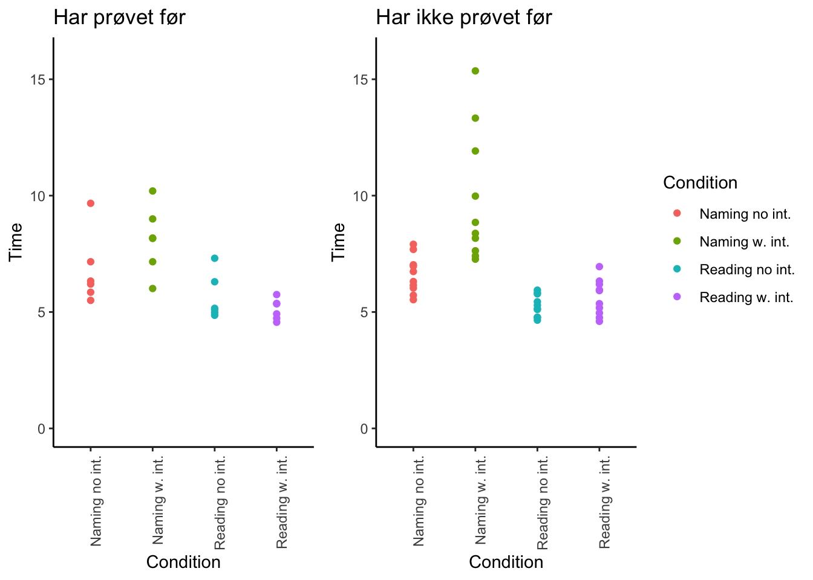
Plot svinet som boxplots
n <- ggplot(pf_long, aes(x = Condition, y = Time, color = Condition)) +
geom_boxplot() +
theme_classic() +
ylim(0, 16) +
labs(title = "Har prøvet før") +
theme(legend.position = "none")
m <- ggplot(ipf_long, aes(x = Condition, y = Time, color = Condition)) +
geom_boxplot() +
theme_classic() +
ylim(0, 16) +
labs(title = "Har ikke prøvet før")
n + theme(axis.text.x = element_text(angle = 90, hjust = 1)) + m + theme(axis.text.x = element_text(angle = 90, hjust = 1))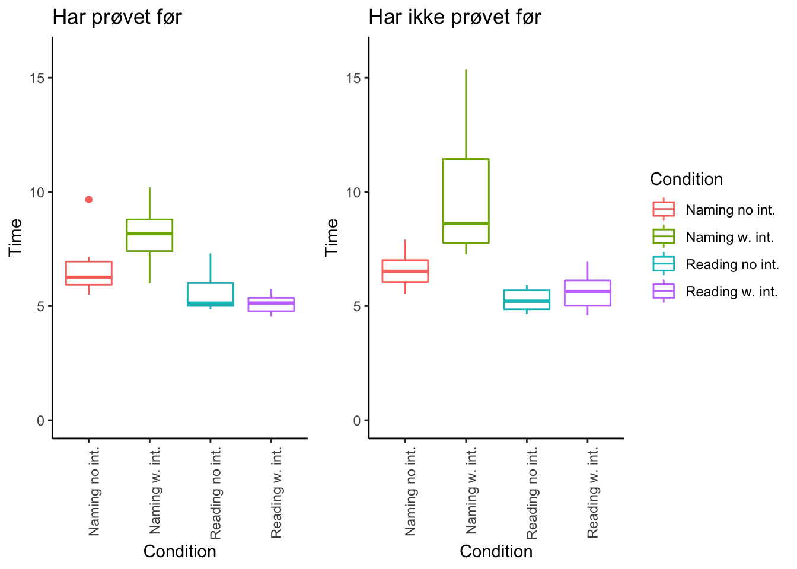
og som violiner
c <- ggplot(pf_long, aes(x = Condition, y = Time, color = Condition)) +
geom_violin() +
theme_classic() +
ylim(0, 16) +
labs(title = "Har prøvet før") +
theme(legend.position = "none")
v <- ggplot(ipf_long, aes(x = Condition, y = Time, color = Condition)) +
geom_violin() +
theme_classic() +
ylim(0, 16) +
labs(title = "Har ikke prøvet før")
c + theme(axis.text.x = element_text(angle = 90, hjust = 1)) + v + theme(axis.text.x = element_text(angle = 90, hjust = 1))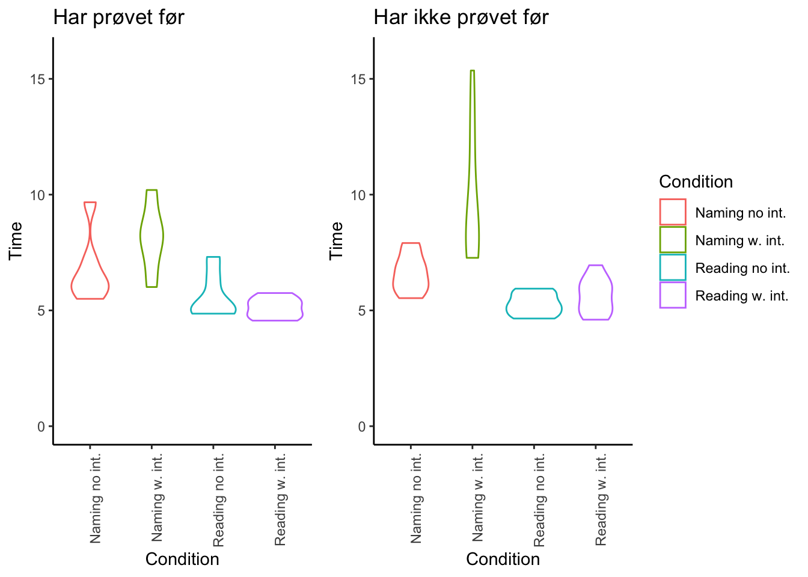 ***